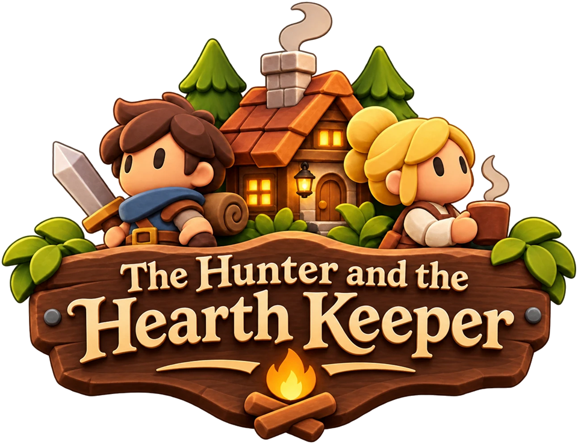
One carries the fire into the dark.
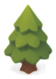
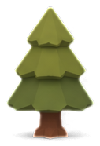
One keeps it burning.
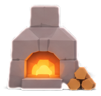
Both come home to it.
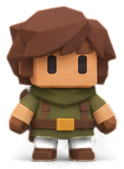
The Hunter
Takes a lantern lit from the hearth and walks into a forest that gets darker the deeper it goes.
- Verbs
- Move, strike, dodge, gather.
- The one decision
- Turn back or go on.
- The pack holds 8 stacks, the lantern is burning, and the best finds are always one clearing further.
- Lantern
- 3:00 at hearth level 1. It stops burning inside any warm light.
- Hearts
- 3, plus the bonus from last night's supper.
- Combat
- One blade, a three-hit chain and one dodge. Creatures hesitate at the edge of lantern light.
- Falling
- The fire calls you home. You wake by the hearth and keep seeds and keepsakes. You lose the rest of the pack. Supper still happens.
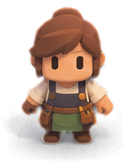
The Hearth Keeper
Stays with the fire. Everything they do there decides how far that lantern can go.
- Verbs
- Tend, grow, cook, place.
- The one decision
- Where the wood goes.
- Wood keeps the fire in its cooking band, stokes the lantern, and builds furniture. There is never quite enough for all three.
- Tend
- The fire is low, steady or roaring. Wood raises it, time lowers it.
- Cook
- Two ingredients in the pot make a dish. It comes out plain, good or golden. It never fails.
- Grow
- Sow, water once, harvest in about 90 seconds.
- Place
- Build furniture from wood and set it on the grid. Every piece adds comfort, so no placement is wrong.
Apart, never alone
One fire in two places
The hearth and the lantern are the same fire. Together, both players share one view. Apart, the screen splits so each can watch the other and call out what they need.
Flame
The lantern is the Hunter's clock.
It burns down as they walk, and faster the deeper they go. When it is out, the gloom closes in and hearts drain until they reach light.
The hearth is the Keeper's window.
The flame shows the lantern's state. It stands tall and steady, flickers when the lantern is low, and thins and pulls sideways when the Hunter is hurt or in the dark.
Stoke
The Keeper throws a log on the fire.
It costs one wood from the shared stock.
The lantern flares for 20 seconds.
The light widens, creatures back off, and the burn pauses.
Waystone
The Hunter lights a standing stone at the end of each forest band.
It stays lit forever as a pool of safe light.
A spark flies home.
The hearth surges and the clearing grows on the Keeper's screen.
Oil
The Keeper brews oils that change the lantern's flame.
Oil brewing unlocks when the hearth reaches level 2.
Each oil opens one kind of obstacle.
Every key in the game is a flame.
One day
One day is one trip out and one homecoming. It takes about 5 minutes at the start and about 8 later. Whoever lifts the lantern is the Hunter for that day.
Pack
Together, 30 s
The Hunter lifts the lantern off its hook and takes oil if there is any.
The Keeper lights the lantern from the hearth and hands over what was made yesterday.
Apart
3 to 6 min
The Hunter walks the forest path, gathers, fights, and decides how deep to go before the lantern burns down.
The Keeper keeps the fire steady, grows the garden, cooks supper and makes the home. They watch the flame and stoke it when the Hunter needs light.
Homecoming
Together, 45 s
The split screen closes into one view.
Coming home is the reward
This is the moment the game is built around. It always plays the same way.
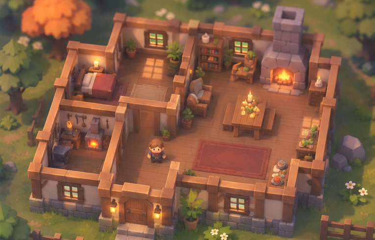
- The Hunter steps into the clearing's light. The split closes and the music comes home.
- The pack is emptied onto the table, one item at a time.
- Both sit and eat. The dish sets tomorrow's bonus hearts. Plain gives 1, good gives 2, golden gives 3.
- Warmth is counted into the fire. Items delivered, the quality of the supper, the comfort of the home and waystones lit all count.
- If the hearth levels up, the fire grows, the clearing widens, and each role gains one thing.
- Keepsakes and seeds are revealed. The game saves.
The hearth is the heart
Every evening the fire is a little bigger.
Each day leaves the hearth a little stronger. A stronger hearth lights a longer-burning lantern. A longer lantern reaches deeper forest. Deeper forest sends better things home.
Warmth is the only progression meter. Both players fill it by doing what they like doing.
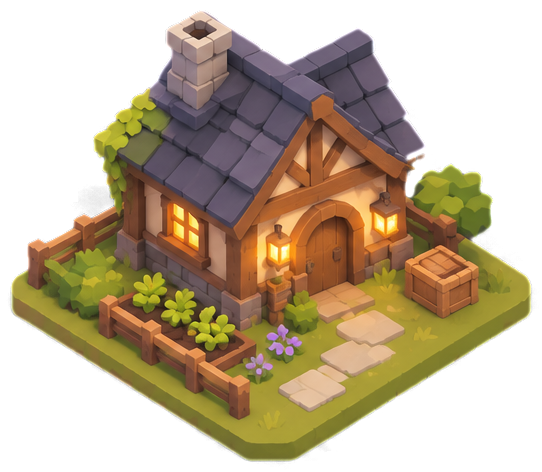
-
1Embers
Small fire, small clearing.
- Hunter
- Lantern, 3:00
- Keeper
- Pot, 4 garden plots
-
2Kindled
Taller flame, wider clearing.
- Hunter
- Lantern, 4:00
- Keeper
- Oil brewing, sage seeds
-
3Hearthfire
Chimney smoke, wider again.
- Hunter
- Pack of 10
- Keeper
- 2 more plots, more furniture
-
4Homefire
A clearing wide enough for a second room.
- Hunter
- Lantern, 5:00
- Keeper
- A second room appears
Concept art
Every image on this page is a concept render. None of them is a screenshot. The target is chunky low-poly 3D seen from a fixed, elevated camera, with roofs that hide when you step inside.
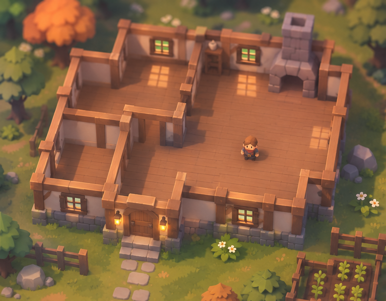
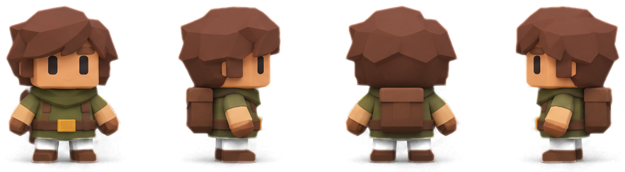
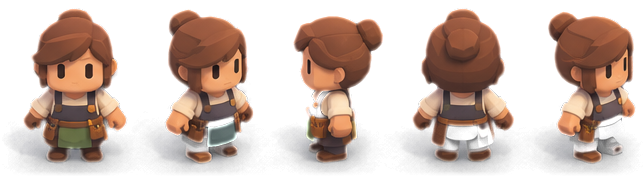
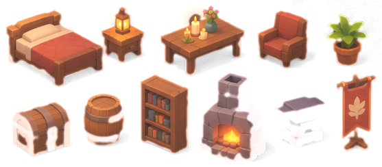
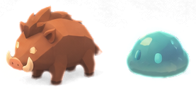
Light is the art direction
-
Warm light means safe.
Only three things make it. They are the hearth, the lantern and a lit waystone.
-
Home is always golden hour.
Light belongs to the place. The first slice has no day and night, weather or seasons.
-
The forest cools and loses colour with depth.
The lantern is the only warm thing in the frame.
Where it stands
This is an early concept in development. A first demo is playable in the browser.
The demo shows the look, the shared view that splits when the two walk apart, and the fire that links them. It has no gathering, cooking, combat or sound yet. Play the demo
Work starts with the look. The first step is one beautiful corner, the clearing at golden hour with the hearth burning. Each step after it is playable and finished before the next one starts.
All numbers on this page are starting values to tune by feel.
The first slice
- Length
- Three days of play, 15 to 20 minutes. After that the loop simply continues.
- Home
- One clearing and one cottage shell with a roof that hides. A hearth, a table, a pantry, a workbench and 6 garden plots.
- Forest
- One path in two bands, the Edge and the Deepwood. Two waystones and one bramble wall.
- Making
- Three stews and one oil.
- Players
- Two, on one computer with two controllers. Alone, you bank the fire with extra wood and take the lantern yourself.
- Tools
- Godot 4, with Blender for assets. The browser demo is a separate, disposable build.
- Still open
- Blade or bow as the one weapon. Blade is recommended.
The hunter and the hearth keeper is a game about one fire. One of you carries it out, one of you keeps it in, and every evening it is a little bigger than it was.